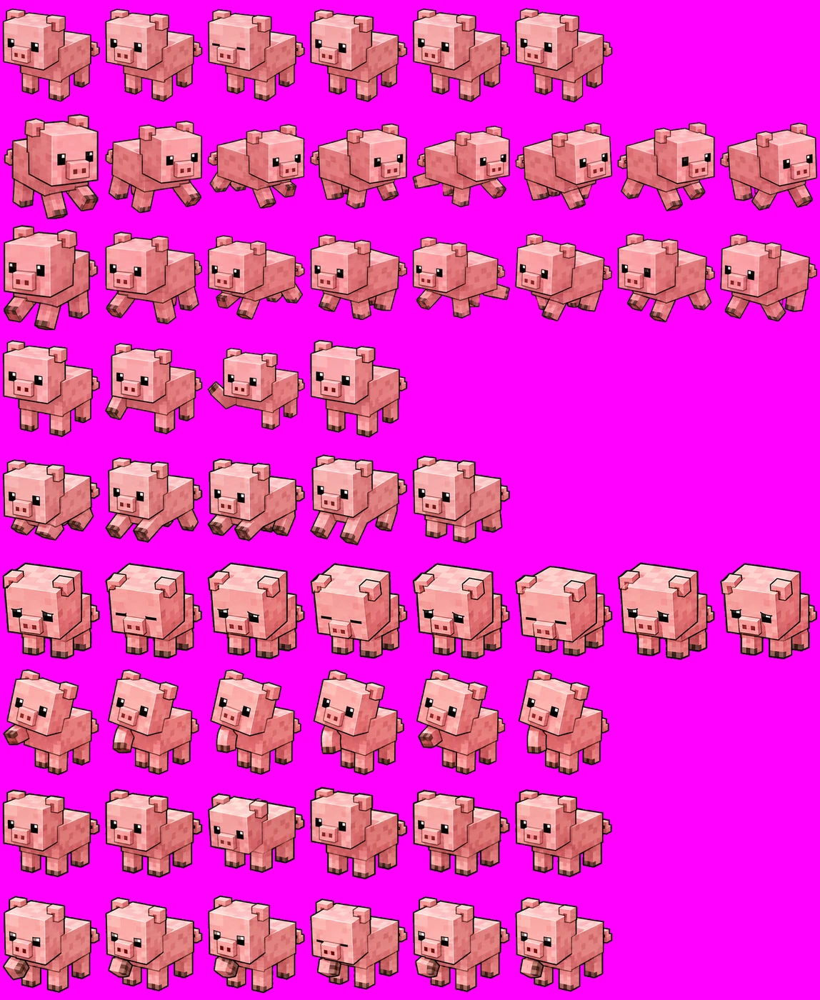
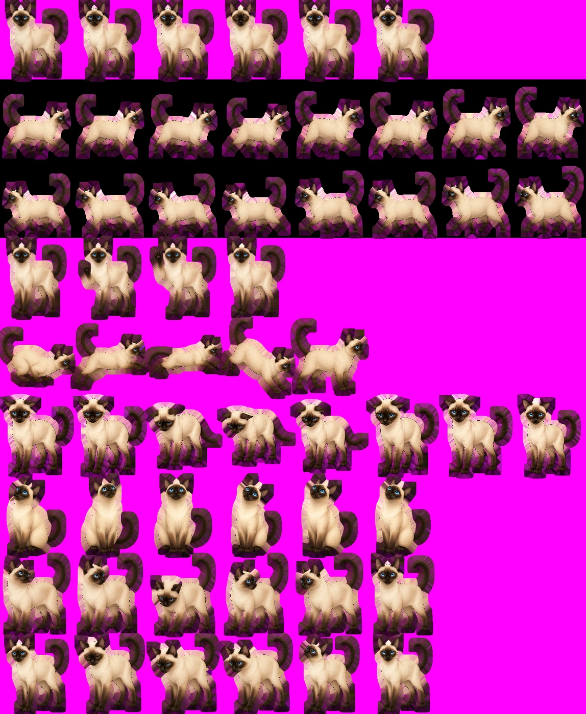

《从课桌到王座》成片片段
Desk to Throne
短剧片段，展示素材整合、节奏和结尾海报替换后的成片效果。
Edited episode clip with material integration and ending poster replacement.
短剧视频素材、海报与宣发视觉、本地工具原型，以及正在推进的 3D 桌宠实验。
Short-drama video assets, campaign visuals, local tool prototypes, and an ongoing 3D desktop pet experiment.
这个页面不做完整项目复盘，只保留可以直接看的成品、片段和工作流线索。
This page keeps the work visible: final visuals, preview clips, and practical workflow traces.


两排六个展示位，先放安全预览版。画面优先看人物、关系感和短剧氛围。
Six preview slots, focused on characters, mood, and usable short-drama shots.
短剧片段，展示素材整合、节奏和结尾海报替换后的成片效果。
Edited episode clip with material integration and ending poster replacement.
都市言情类短剧素材片段，偏人物情绪和场景氛围。
Short-drama material focused on emotion and scene mood.
同一项目下的补充镜头，展示不同镜头气氛和素材可用性。
Additional shot preview from the same project.
哥特吸血鬼题材片段，包含暗色场景、动作镜头和奇幻氛围。
Gothic vampire preview with dark scenes and fantasy mood.
同一题材下的另一组视频素材，延续暗色氛围和角色关系。
Another preview from the same project.
后续补充新的安全展示片段。
More safe preview clips can be added later.
不做裁切图墙，横版和竖版成组展示，方便看同一题材下的版式适配。
Horizontal and vertical visuals are shown together to keep the layout adaptation clear.
偏人物靠近、暗夜氛围和标题安全区的一组主视觉。
A pair focused on character tension, night mood, and title-safe layout.
火焰、城堡和人物回望构成更强的复仇情绪。
A stronger revenge mood built around fire, castle space, and character posture.
补充同一项目下的角色关系和横版 banner 视觉探索。
Additional banner and cover exploration for the same visual world.
这里保留工具的用途和界面，不做工程包装；除简历外暂不开放下载入口。
Tool previews are shown as workflow prototypes. Downloads are closed except resumes.
面向 AIGC 批量素材整理的本地工具原型，覆盖重复图检测、相似图筛选和项目归档前的初步清理。
A local prototype for AIGC asset sorting, duplicate detection, and early-stage cleanup.
轻量桌面悬浮组件，用于在剪辑、游戏和 AI 工具运行场景中查看 CPU、GPU 与内存状态。
A lightweight floating desktop widget for CPU, GPU, and memory status.
基于角色精灵图和动作配置文件制作的 Windows 桌宠 Demo。展示重点放在角色素材、动作表和本地互动效果。
Windows desktop pet demos built from sprite sheets and action configs, focused on character assets and local interaction.


面向 AI 3D 资产落地的实验项目，尝试将 Meshy 生成的模型经过 Blender 检查与 Godot 接入，推进到可互动桌面 Demo。
An ongoing experiment to move Meshy-generated 3D assets through Blender inspection and Godot integration into an interactive desktop demo.
当前站点用于展示可公开的作品片段。完整项目、原始文件和大文件下载入口暂不开放。
This site shows public-safe previews. Full projects, source files, and large downloads are not public.